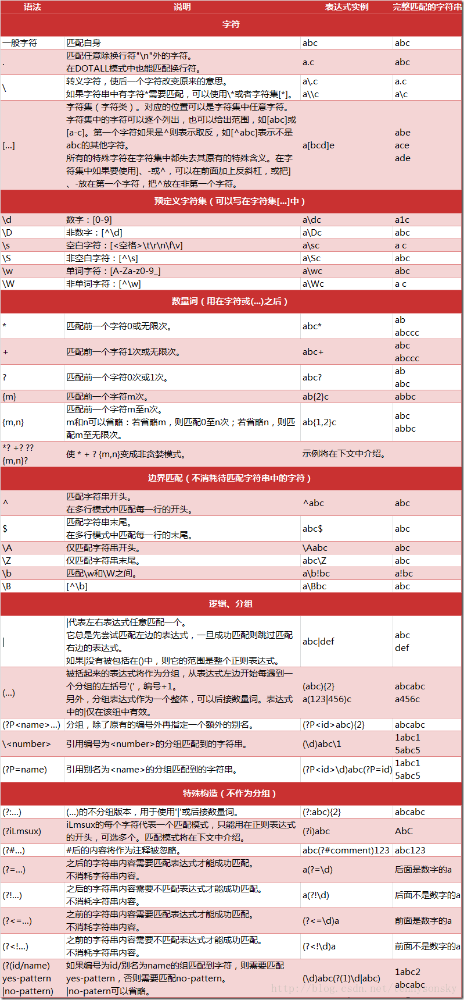

一起学GO(二)
目录
基础
一些内置函数
close主要用来关闭channellen求长度new用于分配基础类型的内存make用于分配引用类型的内存：chan, map, sliceappend用于追加元素到slice中panic, recover用于做错误处理
panic 像raise一样会主动拉出错误，可以用defer 语句处理，用 err := recover() 可以获取错误，并且recover了，则会恢复现场，但是这个现场是跳出了panic的函数的
strconv包
把字符串转换为相应类型。比如strconv.Atoi(s)
返回实体类型，与err编号
结构体
类型别名
1 | type newName oldName |
结构体
和C++中的struct类似，相较于class类来说：
- 结构体中的变量值在内存中的位置和C++类似，会有内存对齐
- 一般定义为大写开始的变量为共有，小写开始的为私有
1 | type Person struct{ |
- struct可以添加函数
1 | func (p *Person) SayHI() (ret int) { |
- 构造函数约定new开头，返回结构体指针
1 | func newPerson(name string, age int) *Person{ // 注意返回一个指针 |
结构体匿名字段
字段类型作为了名字, 但是一般都不会定义int,string这类的匿名，而是一个新的类型，这样有利于提取出公共部分可理解， 而外部访问的时候又可以更直观：
1 | type address struct{ |
继承机制
嵌套其他struct的时候同时也会把函数也嵌套过来，当然，如果函数名重复的话会忽略，自己声明的优先级更高
1 | type animal struct{} |
结构体与json
1 | import "encoding/json" |
但是json访问的时候需要p为首字母大写，但有的json需要小写。
此时就要就需要在struct后加反引号，在包解析的时候会自动转换1
2
3type Person struct{
Name string `json:"name", db:"name", ini:"name` // 在json的名字，db中的名字，init.conf中的名字等。
}
接口
用于抽象化一些类型的共有部分。比如猫狗都能叫，可以抽象出一个类型speak函数，那么在之后调用的时候能直接使用speak，而传入参数能的多种类型的
而其他的struct只要实现了interface中的方法，那么就能传入后调用出来。
1 | type animal interface{ |
空接口
空接口是所有类型的父接口，这样做是为了传入一种类型，比如在map中存动态的类型，一个函数接收所有的类型。
注意有一个大括号 interface{}
1 | m1 := make(map[string]interface{}, 10) |
类型断言
- x: 表示为interface{}的变量
- T: 表示断言x可能的类型
1 | isTrue, err := x.(T) |
package包
包内的变量/函数需要首字母大写才能在外部调用
1 | package 包名 |
这里说明一下，一个go包在运行的时候会进行：
- 全局声明
- 运行init()函数。init函数是内置的，和main类似
- 运行main()函数
在 A import B，B import C时，会先运行initC，再initB和initA。
文件操作
import "os"
os.Open()返回一个*File，对这个指针进行操作len, err = os.Read([]byte)读取一个文件，返回长度和错误标识
import "bufio"
line, err := reader.ReadString('\n')一直读取直到遇到某个字符
import "ioutil"
ret, err := ioutil.ReadFile(path)直接打开文件全部读取到ret中
… 有待补充
time包
ntime := time.Now()获取当前时间ntime.Year(), ntime.Month()...获取时间的详细部分
时间戳
ntime.Unix()获取时间戳ntime.Unix(time int64)将时间戳转换为标准格式时间ntime.UnixNano()纳秒时间戳
时间操作
时间间隔在go中已经用常量定义，类型为Duration，纳秒为最小单位1(time.Nanosecond)
Add(d Duration) 时间加上一个间隔
Sub(u Time) 返回距离u时间多久。结果为 t-u
Equal(u Time) 判断时间是否相同，会有时区的影响
Before(u Time), After(u Time) 判断是否在u之前、之后。
time.Tick(d Duration) 设置一个定时器，本质上是一个通道
ntime.Format(%s) 时间格式化，但是格式化的形式是GO诞生时间…[2006/01/02 15:04:05]
反射
程序在运行期间对程序本身进行访问和修改的能力。Go语言使用reflect包提供程序的反射信息。
现有的使用场景可以举个例子：加载ini文件时，需要动态判断某个字符是什么类型的，这个定义是再代码中的。
需要注意的是反射性能并不高，需要尽量少用
reflect
每一个对象都又Type,Value两个属性。分别对应reflect.Type 和 reflect.Value。
也可以使用 TypeOf() 和 ValueOf()两个函数进行对对象的属性获取
而类型又可以分为：类型Name, 种类Kind类型。比如一个结构体的Name是我们取的名字，而kind是struct类型
t := reflect.Type; t.Name, t.Kind()
Elem() 在函数中通过反射的方法修改变量的值，可以使用这个函数来获取对应的指针
IsNil(), IsValid() 判断v持有的值是否为nil，比如指针是否为空。valid判断v是否持有一个值，这个值是否有效
…这里需要再加强学习一下
结构体反射
Field(i int) 用于获取第i个字段的信息，当然也包括.Name, .Index, .Type, .Tag tag是结构体内变量的附加信息，参考json
NumField() 获取结构体中的变量个数
并发
Go天生支持并发，这一章对于Go非常重要，我之后会单独起一篇来记录一下他的原理，这里简要说明一下
goroutine类似与线程，属于用户态的线程。当你需要让某个任务并发执行的时候，只需要把这个任务包装为一个函数，开启goroutine去执行这个函数就可以了。使用方法是在函数前加一个 go 就可以了
Go语言提供了channel在多个goroutine之间进行通信。
注意闭包的情况，在go并发的时候，内部的匿名函数如果使用了外部的变量，那么在真正调用的时候会使得结果并不是我们想要的结果。详细参考一下闭包
结束等待wait
sync.WaitGroup 是一个线程结束标记，类似一个channel，在新建一个线程时候将其加1，每个线程结束都defer一个wg.Done() 这样做直到线程全部结束时，wg.wait()就能通过了
1 | var wg sync.WaitGroup |
GMP调度
OS线程一般都固定的栈内存为2MB，而goroutine的栈一开始设置为2KB，但是并不是固定的，之后可以增大和缩小。
G存放goroutine的信息，以及和P的绑定等信息M是Go运行时对操作系统内核线程的虚拟，M和内核线程一般是1to1的p管理一组goroutine队列，其中存放当前goroutine运行的上下文环境，并且自带又自己的队列调度机制。P与M一般也是一一对应的。
会把m个goroutine分配给n个操作系统线程来执行
runtime.GOMAXPROCS() 可以限制当前进程可以使用的线程个数。默认的是CPU的逻辑核心数，会默认跑满整个CPU
channel
Go的并发模型是CSP，提倡通过通信共享内存，而不是通过同共享内存来进行通信
通道像一个传送带或者队列。FIFO的顺序，每个通道需要一个具体的类型指定传输的元素类型
channel是一个引用类型，需要先初始化才能使用，所以是使用make来进行初始化
1 | var ch chan int |
缓冲区
如果channel没有设置缓冲区，那么在发送的时候会一直等待，直到有人接收。
close(ch) 关闭一个通道，只有在通知方goroutine所有的数据发送完毕了才需要关闭通道，他是可以被GC回收的，因此关闭通道这个操作并不是必须的。
- 对关闭了的通道进行读会返回0
for range range支持了从通道中取值
单向通道
func f1(ch1 chan<- int)声明一个单向通道，这里是声明了只能进行写入func f1(ch1 <-chan int)声明一个单向通道，这里是声明了只能进行读出
多路复用select
从多个通道里进行取值。
1 | // 基本语法 |
正则表达式
go使用包regexp包进行正则表达式的使用。
这里有正则的常用规则：
